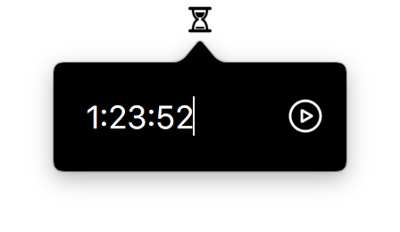

SmallTimer
The smallest timer app you could ever hope for!
Simply type in however much time you want, and after the time has elapsed, this timer will GRAB YOUR ATTENTION.
Useful for giving yourself a timed break before getting back to business.
Use colons to specify times like "1:42" for one minute forty-two seconds, or "3:12:00" for three hours, twelve minutes, zero seconds.

Set a timer for one hour, twenty-three minutes, and fifty-two seconds
Start this app automatically when you log in to your computer in its option menu.
Simple, unobtrusive black-and-white color scheme.
Hides all UI while you're not interacting with it.
Questions? Ask the developer!